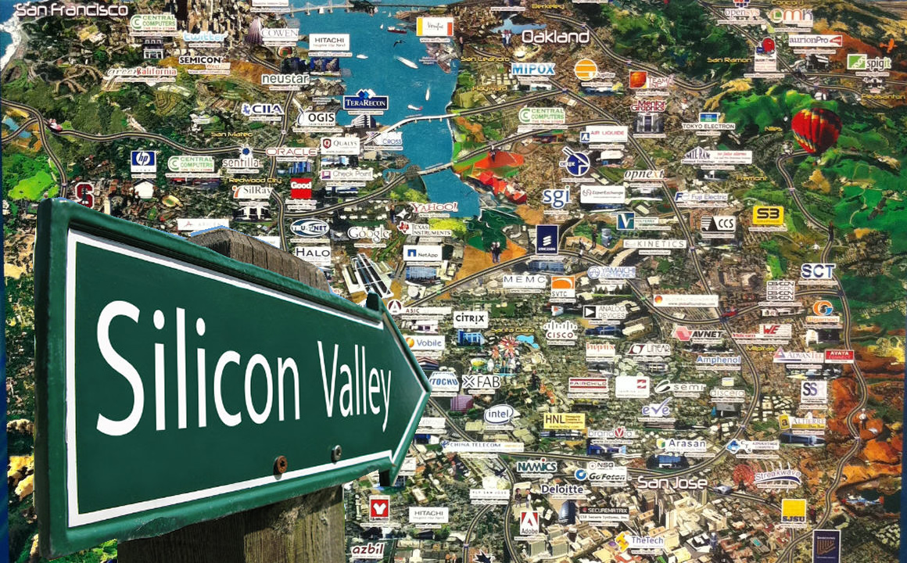

Silicon Valley
Where great things were formed...

Santa Clara Valley in Santa Clara County
Some timed moments that shaped the area the way it is :
- 1890's - British field marshal, Lord Kitchener, visited the Santa Clara Valley and dubbed it The Valley of Heart's Delight.
- 1909 - the Federal Telegraph Co. which had been established in Palo Alto
- 1912 - Lee de Forest and his collaborators first successfully utilized the vacuum tube to amplify sound.
- 1927 - the first all-electronic transmission of television was achieved in San Francisco.
- 1937 - Federick Terman began encouraging Stanford faculty and graduates to start businesses locally(Ex.Hewlett Packard - William Hewlett and David Packard).
- 1946 - Terman returned to Stanford as the dean of the engineering school. In this capacity Terman continued to encourage the development of local businesses in electronics.
- 1968 - Robert Noyce, Gordon Moore and Andrew Grove founded Intel to produce integrated circuits.
"Technology is nothing. What's important is that you have a faith in people, that they're basically good and smart, and if you give them tools, they'll do wonderful things with them."
- Steve Jobs
If you have time, you should read more about this amazing place here and other sources.